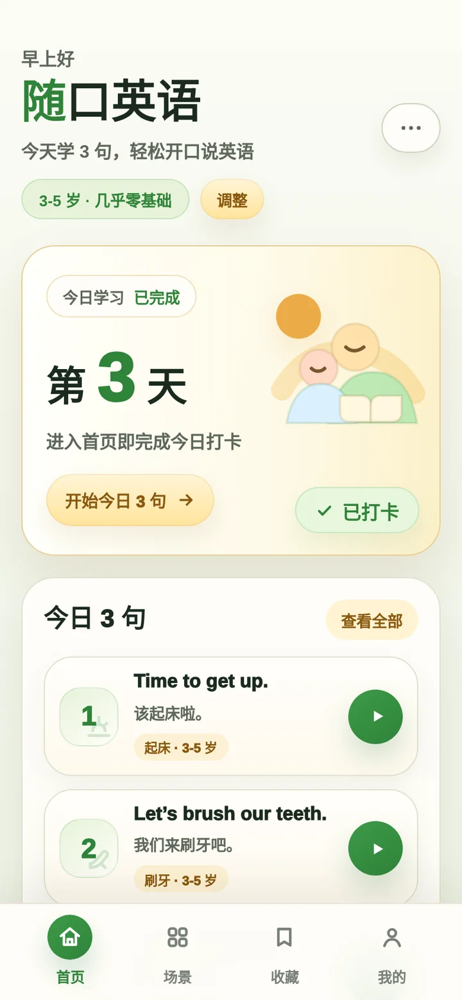
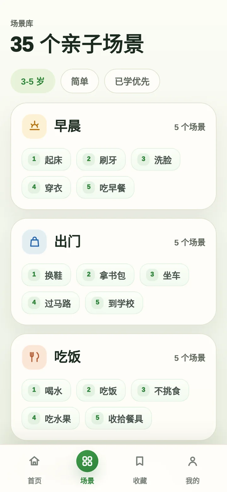
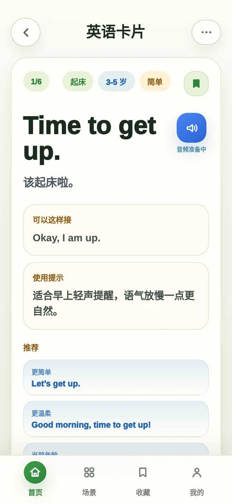

ailiu.online · portfolio
I'm a UX designer. Software, mostly AI tools these days.
On reading slowly×
New tab×
+
ESSAY · 6 MIN
On reading slowly
Fast reading is a way of collecting pages. Slow reading is a way of being changed by one. The difference shows up in the margins.
Old books are full of pencil. Marginalia are a conversation with the page. Someone argued, underlined, asked a question and moved on.
What if the margin could answer back, without sending you to another tab?
Avisoesc
“Marginalia are a conversation with the page.”
What would a good margin note look like here?
Ask about the selection…↵
Mock built in HTML · real screenshots & recording pending
Core capabilities
Screens are anonymized mockups



No link yet · mini program not public
Screens from the HTML prototype · mini program in development
Animated stand-ins · real clips to come
01The name
Like dinner at a relative’s.
小姨家
photos to come02The idea
A taste of home.
photos to come
03To go
What you carry home.
photos to come
04Menu
What's on the table today.
photos to come